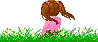

イラストは、ケムリ様です。 ありがとうございました！＾ワ＾ |
コンテンツ名の横の葉にカーソルを合わせると、説明が出ます。 小鳥の巣箱 お絵かきチャット 見晴らし台 シャイン’s Room 物語の世界 スケッチブック 森の調べ ティーテーブル コンテンツ |
ちょっとした寄り道にどうぞ。 こちらも、花にカーソルを合わせると、説明が出ます。 シャインの日記帳 お絵かきスケッチブック リンクページ キリ番ゲッターの書 サブコンテンツ |
 第一代TOP絵 |
アンケート集計完了！
投票してくださった皆様、本当にありがとうございます！
結果発表はこちら
ＷＥＢ拍手返信
五月二十一日、
拍手リクエストの「キノール擬人化」をUPしました。
イラストは、ケムリ様です。 ありがとうございました！＾ワ＾ |
コンテンツ名の横の葉にカーソルを合わせると、説明が出ます。 小鳥の巣箱 お絵かきチャット 見晴らし台 シャイン’s Room 物語の世界 スケッチブック 森の調べ ティーテーブル コンテンツ |
ちょっとした寄り道にどうぞ。 こちらも、花にカーソルを合わせると、説明が出ます。 シャインの日記帳 お絵かきスケッチブック リンクページ キリ番ゲッターの書 サブコンテンツ |
第一代TOP絵 |
ＳＩＮＣＥ．２００５．３．
１０００HIT記念フリーイラスト配布中。
| 風の伝言板 とうとう、リニューアルも近づいてきました。 ていうか･･何ヶ月かかる事だろうorz シャインの一言 や、もう、中学三年って忙しすぎ。 そのうち「ネット落ちしまぁすｖ」って発言が飛ぶやもしれまｓ（泣 それと･･ご要望が多かった、チャット会も開く 予定。 （∑予定かよ！！） 最終更新５月２１日 ・ アンケート集計完了！結果は上からどうぞ。 リンクにも、素敵サイト様二件追加。 これで、リニュの秒読み開始です（５．２１ ・ 森の調べ、更新（遅！！ 小説に合う物を（というか管理人が好きな曲を） たくさんお借りしてきましたので、小説のＢＧＭにどうぞ。 また、掲示板の利用規約も更新。 相互リンクについてです（５．１６ ・ どれ、ついでにアルバムでも見るか |
気まぐれスペース 管理人シャインのお遊びスペースです♪（待て 主に、作品の裏話暴露大会や 色んなキャラクターを招いての座談会が開催されております♪ 栄えある第二回は、「ペーパーマリオRPG」から 仲間キャラ三名を招待して、 リニューアル計画について語ってみてます。 こちらから、どうぞ♪ |
それでは、現実世界へと戻ります。
いつかまた、貴方へお会い出来ますよう･･
戻る